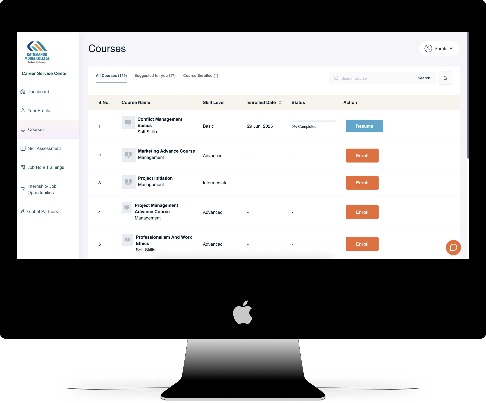
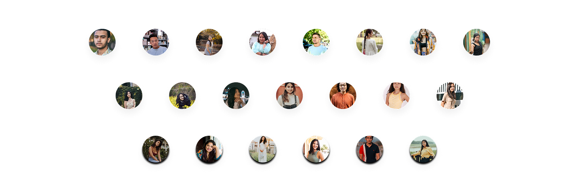

A nationwide platform preparing students in Nepal for real-world careers.
Industry
EdTech | Career Services | Workforce Development
Role
UI/UX Designer
Team
Collaborated with the product owner, project manager, front-end back-end engineers, and QA
Duration
8 months
Approach
User-centered design
Tools
Figma, Figjam, Slack, Miro
Career Service Center (CSC) is a digital platform developed to close the gap between academic learning and real-world job readiness in Nepal. It combines self-assessment tools, job-role-specific training, and direct access to internships and employment opportunities offering a unified experience for students, employers, and educational institutions.
In Nepal, graduates often leave university unprepared for real-world jobs, while employers struggle to find skilled, job-ready talent. There was no single platform that combined skill-building, self-assessment, and job placement in a localized, user-friendly way. Employers struggle to find candidates who are prepared for real-world responsibilities, while students lack resources to develop those skills outside the classroom. Existing solutions were fragmented and inaccessible. CSC was created to solve this disconnect by offering a centralized, job-readiness platform tailored to the local context.
How might we effectively bridge the gap between academic skills and industry requirements to better prepare students for employment?
User research for the Career Service Center involved understanding the needs of students and employers through surveys, interviews, and feedback from training sessions. These insights guided the design of key features focused on skill development, self-assessment, and job matching. By continuously iterating based on user feedback, we ensured the platform remained intuitive, relevant, and aligned with the evolving needs of its users.
We conducted surveys and interviews with 55 potential users to gain insights into their experiences, expectations, and challenges related to career development. The target audience, ranging from ages 20 to 50, included university students, recent graduates, and early-career professionals. This research provided a mix of quantitative and qualitative data that directly informed the design decisions and feature development of the Career Service Center platform.
72% of users reported being unsure about which skills to prioritize, pointing to the need for guided learning paths and role-specific recommendations.
65% of participants lacked confidence in soft skills such as communication and professionalism, signaling the importance of dedicated soft skill training.
58% struggled to connect with relevant job or internship opportunities, highlighting the need for a built-in job matching system.
Following the analysis of initial survey data, we conducted in-depth interviews with a focused group of 15 participants, including students, recent graduates, and early-career professionals. These sessions were held via Zoom at flexible times to accommodate participants’ schedules. The goal was to gain deeper insights into their career development challenges, expectations from the platform, and specific pain points in navigating skill-building and job opportunities.
Based on user research, interviews, and survey insights, we defined clear design goals to directly address the most pressing challenges faced by students and employers. These goals guided every design decision to ensure the platform was user-centric, relevant, and scalable.
Proposed Features
After thoroughly analyzing user research and feedback, we identified key design goals to directly tackle the challenges students and employers face in bridging the academic-industry gap. These goals guided us in developing focused features for Career Service Center, ensuring an engaging, user-friendly platform that effectively supports skill development, self-assessment, and job matching to better prepare students for the workforce.
Font Family: Inter
Visit the Career Service Center: careerservicelab
(Note: This is the live deployed version post-development handoff)
Working on CSC gave me the opportunity to design for real social impact. I learned how to navigate government and educational constraints, balance local accessibility needs, and create scalable systems used at a national level. If I could revisit this project, I would incorporate gamification in skill progression and explore SMS-based notifications for users in low-connectivity areas.